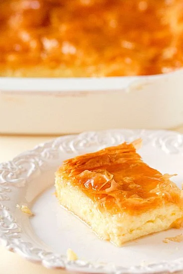
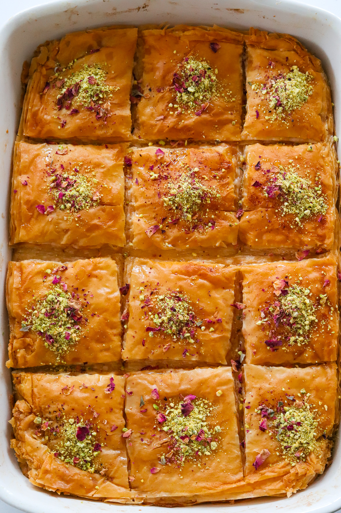

DESSERT
GREEK CUSTARD PIE
PREP TIME: 1 HOUR
COOK TIME: 1 HOUR
TOTAL TIME: 2 HOURS
YIELDS: 12
Custard Pie is a very popular sweet in Turkey, Syria, and Greece
and it’s definitely one of my favorite desserts that is incredibly
unique! Think of this Custard Pie like baklawa but instead of a nut
filling, it’s a creamy custard in the center. It’s buttery, crispy,
perfectly sweetened, and surprisingly not too difficult to make!
JUMP TO RECIPE
GREEK CUSTARD PIE
Custard Pie is a very popular sweet in Turkey, Syria, and Greece
and it’s definitely one of my favorite desserts that is incredibly
unique! Think of this Custard Pie like baklawa but instead of a nut
filling, it’s a creamy custard in the center. It’s buttery, crispy,
perfectly sweetened, and surprisingly not too difficult to make!

INGREDIENTS
CUSTARD
- 2 cups whole milk
- 2 cups heavy cream
- 2 teaspoons vanilla extract
- 1/2 cup white sugar
- 1/2 cup fine semolina
- 1/3 cup cornstarch
- 1/4 cup unsalted butter
- 4 eggs
- 1/3 cup granulated sugar
PHYLLO
- 1 package phyllo dough
- 1 cup unsalted butter, melted
SYRUP
- 3/4 cup water
- 1 1/2 cups granulated white sugar
- 1 teaspoon orange blossom water
- 1 cinnamon stick
- squeeze of lemon juice
GARNISH
- l chopped pistachios
- dried rose petals
INSTRUCTIONS
MAKE THE SYRUP
-
While the ashta cools down, make the simple syrup. In a pot
over medium heat add the water, sugar, and orange blossom
water.
- Bring to a boil so all the sugar is dissolved and then reduce
the heat to low and simmer for 10 minutes. Transfer to a bowl
and allow to cool to room temperature so it thickens up a bit
more.
MAKE THE CUSTARD
-
In a mixing bowl, add the 4 eggs and 1/3 cup sugar. Beat
together with a whisk until lighter in color. Set aside.
-
To a small pot over medium heat, add the heavy cream, milk,
sugar, salt, cornstarch, semolina, and vanilla extract.
-
Whisk continuously and bring to a boil. Once bubbling, reduce
the heat, bring it to a simmer, and continuously whisk so it
doesn't become clumpy until it thickens up.
-
Once thick, take off the heat and add the butter. Mix to
incorporate in.
-
Slowly add a bit of the custard into the egg mixture, mixing
every time to temper the eggs. Then add all the hot custard in
and mix until smooth and creamy.
ASSEMBLY AND BAKE
-
Preheat oven to 350°F.
-
Take out phyllo sheets and cover them with a damp clean towel
to keep them from drying out.
-
Brush the bottom of a 9x13 tray with the melted butter.
Add a sheet of phyllo dough, letting the sides hang over on the
edges of the pans.
-
Brush the phyllo sheet with butter and add another sheet on
top. Repeat this step of phyllo and butter until you have 9 to
10 phyllo sheets stacked, or half the package.
-
Pour the custard on top of the phyllo sheet and now repeat the
phyllo sheet and butter layers again until you have another 9
to 10 layers.
-
Cut with a sharp knife into 12 equal pieces.
-
Transfer to the oven and bake for 45 to 50 minutes until the
top is golden and crispy.
-
Take out of the oven and immediately pour the simple syrup all
across, adding as much or as little as you like.
-
Garnish with chopped pistachios and rose petals.
-
Allow the syrup to soak for at least an hour before enjoying!